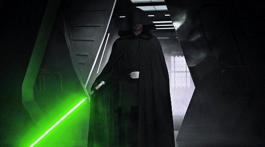

Luke Skywalker
Darth Vader

Obi wan kenobi is one of the greatest jedi and the best defensive style lightsaber user in jedi history. He single handedly defeated the fiercest and the most dengerous and strongest sith lord known to the man kind Darth Vader. And is one of the only survivors of the jedi extinction. Because of him and yoda another legendry jedi and the last of the skywalker blood Luke Skywalker was brought into the light of the force. Luke Skywalker destroyed the death star and brought balance to the force and defeated vader and sidious and put an end to the galactic empire.
Hire HimIn this scene obi wan uses his full might of the force against Darth Vader. We have never obi wan this powerfull with the force and neither did we see darth vader this much defeated. Darth vader is the most dengerous killing machine and tremendously strong in the dark side of the force. Yet we saw him struggling against Obi wan kenobi. This proves how strong obi wan kenobi actually is.